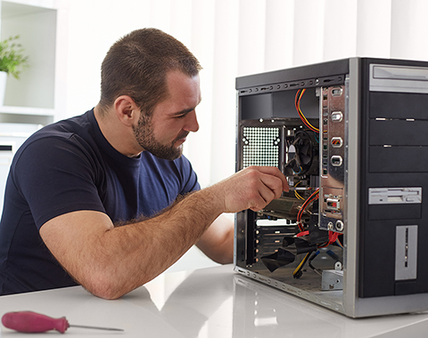
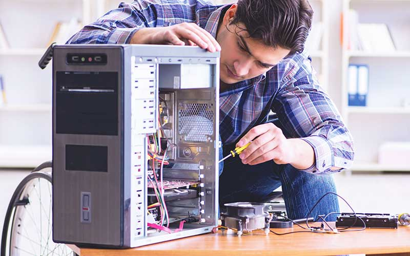
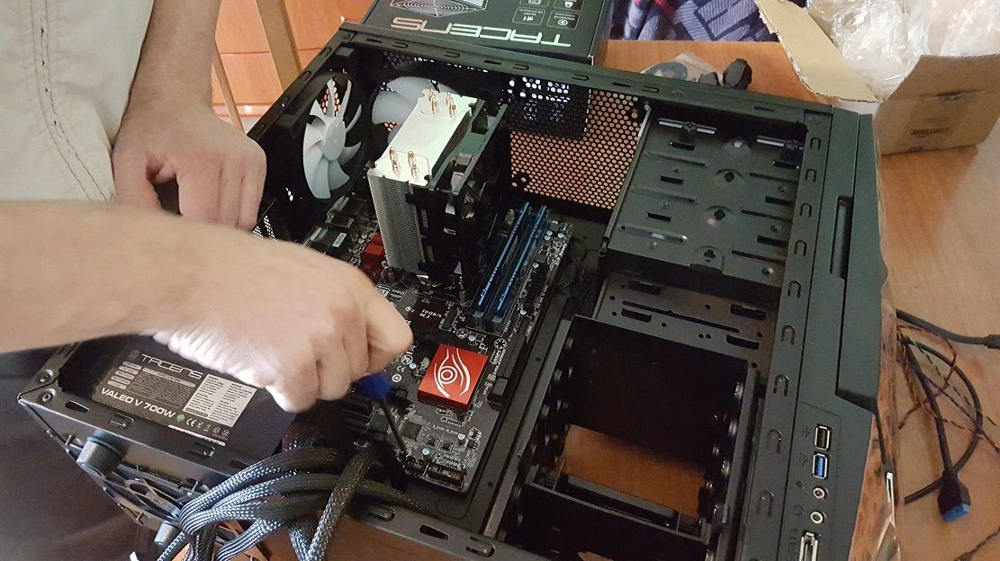
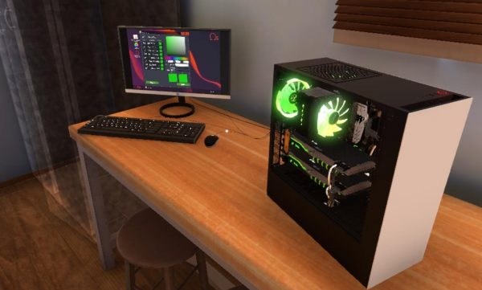
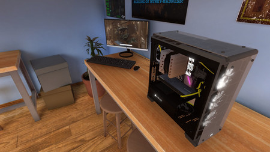

Reparación y Mantenimiento de PCs
Brindamos un servicio integral de reparación y mantenimiento para asegurar que tu PC esté funcionando correctamente. Ya sea que tengas problemas con el hardware o el software, estamos aquí para ayudarte.
Lo que ofrecemos:
- Reparación de Hardware: Solucionamos fallos en componentes internos como la placa base, memoria RAM, disco duro, etc.
- Reparación de Software: Solucionamos errores de software, fallos en el sistema operativo y problemas con programas específicos.
- Optimización del Sistema: Mejora del rendimiento de tu PC, limpieza de virus, eliminación de archivos innecesarios y ajustes del sistema.
- Instalación y Configuración: Instalación de nuevo software, sistemas operativos y configuración de tu equipo para que esté listo para usar.
Fotos de computadores clientes
Te mostramos algunos ejemplos de trabajos realizados en equipos de nuestros clientes:


Instalación de Redes y Periféricos
Ofrecemos instalación de redes informáticas y de dispositivos periféricos, asegurando que tu equipo esté completamente conectado y funcional.
Lo que ofrecemos:
- Instalación de Redes Wi-Fi: Configuración de redes inalámbricas para tu hogar o empresa.
- Instalación de Redes Cableadas: Instalación de cables Ethernet y configuración de routers y switches.
- Instalación de Periféricos: Conexión y configuración de impresoras, escáneres, cámaras web, teclados, ratones, etc.
- Soporte Remoto: Diagnóstico y resolución de problemas de forma remota sin necesidad de enviar tu equipo.
Fotos de Instalaciones
Aquí tienes algunas imágenes de instalaciones realizadas para nuestros clientes:


Asesoría y Consultoría en Tecnología
Si necesitas asesoramiento para la compra de componentes, equipos o servicios tecnológicos, te ayudamos a tomar la mejor decisión con base en tus necesidades.
Lo que ofrecemos:
- Asesoría en Compra de Equipos: Te ayudamos a elegir los mejores equipos según tus necesidades y presupuesto.
- Consultoría en Optimización de Tecnología: Mejoramos el rendimiento y eficiencia de tu infraestructura tecnológica.
- Gestión de Proyectos Tecnológicos: Asistencia en la planificación y ejecución de proyectos tecnológicos en tu empresa.
- Soporte Continuo: Planes de soporte continuo para mantener tus equipos en perfecto estado.
Fotos trabajos Realizados
Ve algunos de nuestros proyectos y trabajos realizados para nuestros clientes:


Sobre Nosotros
Somos una empresa con más de 10 años de experiencia en el área de soporte técnico de PCs. Nos especializamos en mantener y reparar equipos para garantizar su correcto funcionamiento, tanto a nivel de hardware como de software.